Library Resources
Overview
Understanding Implicit Bias
This library resource page provides an introduction to key concepts that help us better understand identity, equity, and bias within technology. It explores how implicit bias, the unconscious attitudes and stereotypes we all carry, can influence our decisions and interactions, often without our awareness. The page also introduces key terms such as intersectionality, which recognizes how overlapping identities such as race, gender, class, and ability shape people's unique experiences of privilege and discrimination. Additionally, it highlights the Implicit Bias Test (IBT),as a tool for reflecting on the automatic associations we may hold.
Key Terms
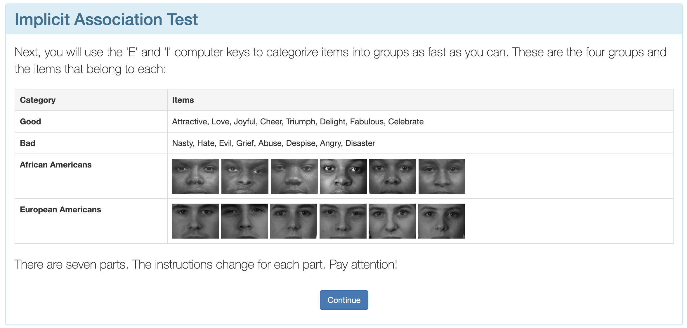
Implicit Bias Test (IBT)
The Implicit Bias Test (IBT), also known as the Implicit Association Test (IAT), was developed in 1998 by three scientists: Dr. Tony Greenwald, Dr. Mahzarin Banaji, and Dr. Brian Nosek. The Implicit Bias Test is a psychological assessment designed to measure unconscious biases. It shows the automatic associations we make between people and certain traits. The test measures how quickly you associate certain groups (such as race, gender, or age) with positive or negative words or concepts. If someone responds faster to one pairing than another, the test interprets that as a possible implicit bias.
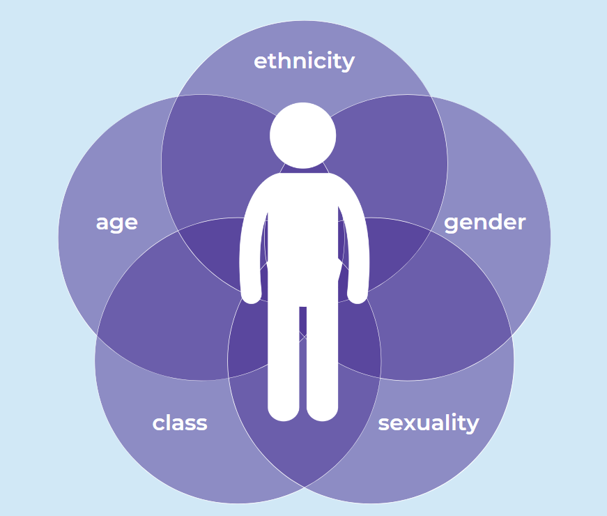
Intersectionality
Intersectionality means recognizing that people's experiences aren't shaped by just one part of who they are. Factors such as race, gender, class, or ability can overlap, creating unique challenges or advantages for each person.
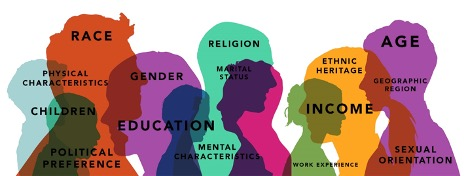
Implicit Bias
Implicit bias is an automatic, unconscious attitude or stereotype that shapes how we think about and treat others. It’s a quick conclusion the brain makes without you even realizing it. These biases often develop from what we absorb through culture, media, family, and personal experiences. Even if we consciously reject certain stereotypes, implicit biases can still influence our decisions and behavior without our awareness.
Resources
 #FFFFFF Diversity
#FFFFFF Diversity
The author critiques tech “diversity” programs for mostly helping white women while ignoring other groups. Companies invest heavily on women in tech but rarely include women of color.
 Things I Wish Someone Had Told Me When I Was Learning How to Code
Things I Wish Someone Had Told Me When I Was Learning How to Code
This article shares practical advice from the author's own journey, emphasizing the importance of patience when learning how to code. In the author's opinion, when learning programming, it's helpful to focus on projects that matter to you. This motivational reading reminds learners that struggling is a normal and necessary part of becoming a confident developer.
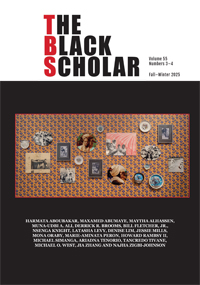
The Black ScholarCreated as a space for Black writers and activists to analyze and debate the political and social conditions that affect Black communities. It also explores issues involving power dynamics, especially in relation to exclusion and marginalization.
The Implicit Bias Test (IBT) is a range of tests where you can report your beliefs and attitudes about different topics.
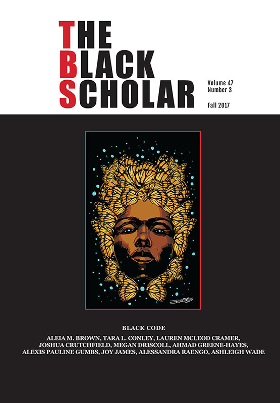
Decoding Black Feminist Hashtags as BecomingTara L. Conley focuses on power structures around race and gender in social media and how code is built. An example she gives is hashtags like #YouOkSis, which stand out because they are more than just trends, they're a way to reach a large audience and speak up about racism and sexism.
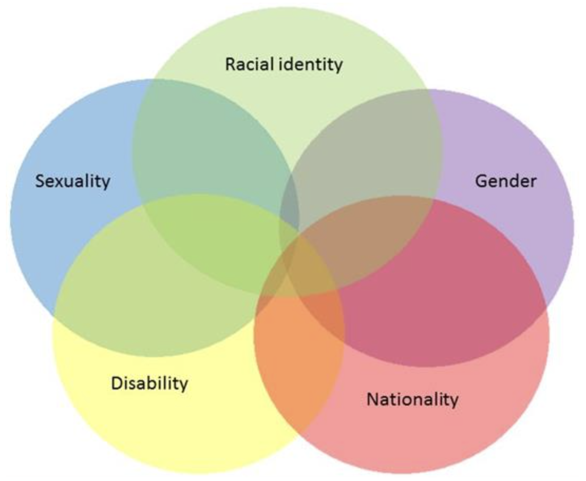
Intersectionality 101: what is it and why is it important?Intersectionality means different forms of discrimination overlap and shape women’s experiences in different ways. The article argues that women’s rights work must center marginalized women and take an inclusive, intersectional approach to achieve real equality
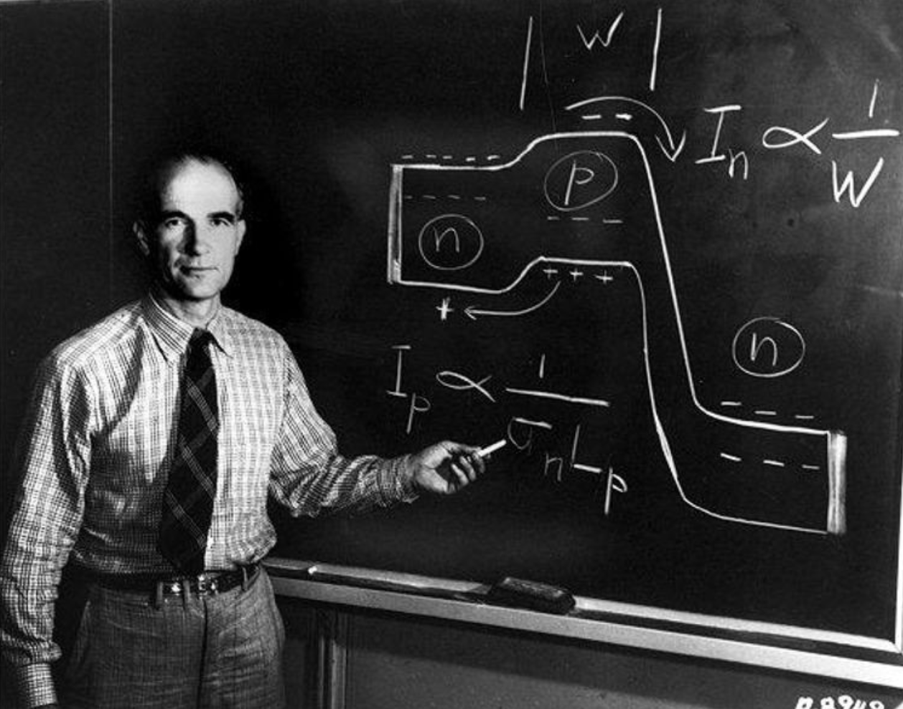
Indigenous CircuitsTech companies hired Navajo workers partly for their skills but mostly because they were cheap. They ignored stereotypes that Navajo could only do traditional crafts and focused on hiring white men. The 1975 protest showed that workers resisted unfair conditions. This shows that technology is shaped by race, money, and power.
Children are not born with racial biases, but they pick them up very young by observing adults and social cues, even when adults try to discourage prejudice. Studies show kids notice who gets attention, power, or positive signals, and they imitate these patterns, forming biases about race, status, and who “deserves” empathy or play. Early school experiences, teacher behavior, and classroom dynamics can unintentionally reinforce these biases, showing that children absorb social patterns quickly, long before formal lessons about race.
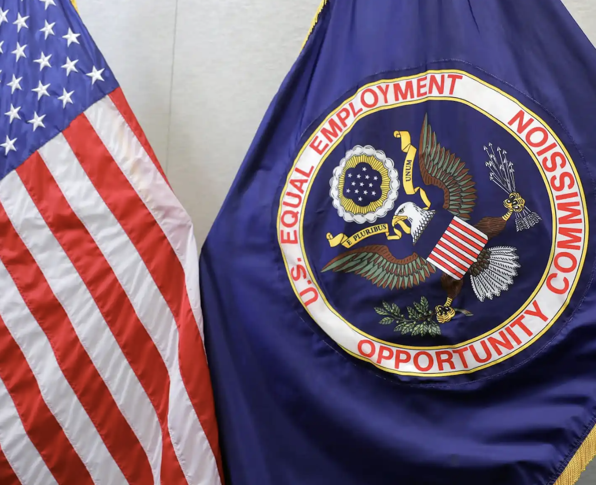
Gender, race, and intersectional bias in AI resume screening via language model retrievalChildren are not born with racial biases, but they pick them up very young by observing adults and social cues, even when adults try to discourage prejudice. Studies show kids notice who gets attention, power, or positive signals, and they imitate these patterns, forming biases about race, status, and who “deserves” empathy or play. Early school experiences, teacher behavior, and classroom dynamics can unintentionally reinforce these biases, showing that children absorb social patterns quickly, long before formal lessons about race.
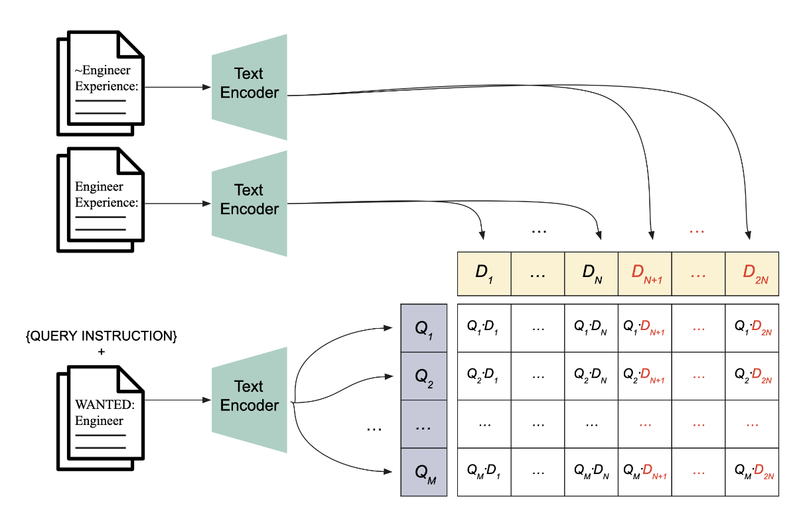
Gender, Race, and Intersectional Bias in Resume Screening via Language ModelRetrievalThis study finds that large language models (LLMs) used for resume screening reproduce real-world biases, favoring White names and disadvantaging Black males. Analysis of over 500 resumes shows gender and racial disparities influenced by both demographics and textual features like document length. These results highlight fairness and legal concerns for AI-driven hiring tools.
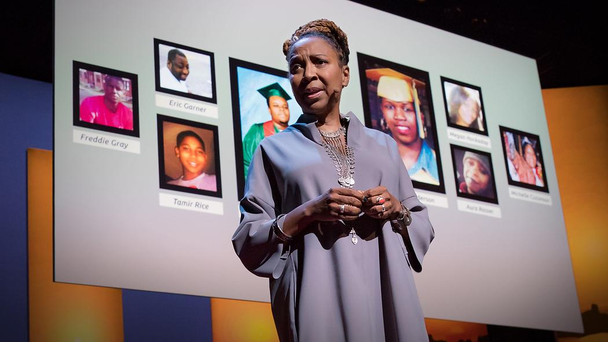
The urgency of intersectionality | Kimberlé Crenshaw | TEDKimberlé Crenshaw explains that people with overlapping identities can experience discrimination; anyone whose identities intersect experience this. She explains this with a case where a company hired white women and African American men but no African American women, showing how discrimination can uniquely affect people at the intersection of race and gender - a concept she calls intersectionality.
Analysis
Intersectionality
Intersectionality refers to the way social categories such as race, class, and gender are interconnected and overlap in people’s lives. These overlapping identities can shape how individuals experience privilege, discrimination, or disadvantage. Rather than facing inequality for just one reason, many people experience it in layered and complex ways. Because everyone holds multiple identities, each person’s experience with discrimination or oppression is unique. From the sources above, intersectionality is evident in areas such as the workplace, wage gaps, the legal system, and healthcare outcomes. Workplace discrimination is especially common. Several of the readings highlight how Black women are often targeted not only because they are women, but because they are both Black and female. Their experiences cannot be understood by looking at race or gender alone; it is the combination of both (or multiple factors) that shapes the discrimination they face. For example, in the United States, Black women earn approximately 67 cents for every dollar paid to a white, non-Hispanic man. This wage gap reflects how intersecting identities can compound inequality, demonstrating why understanding intersectionality is essential when addressing systemic discrimination.
IBT
When we took the race test, we were asked to quickly click buttons to categorize different words and faces. As we moved through the task, it was easy to fall into a rhythm. Our responses became almost automatic, and we weren’t consciously thinking through each association. Once we adjusted to certain pairings, our reactions felt smooth and effortless. However, when the groupings suddenly switched, the task became noticeably more difficult, even though we understood what the correct answers were supposed to be.
What stood out most was how little time there was to pause and reflect. Because everything happened so quickly, many of our responses felt instinctive rather than intentional. That experience helped us realize that bias does not always come from conscious beliefs. Instead, it can develop gradually through repetition, exposure, environment, and learned patterns shaped by culture and upbringing. The hesitation we felt when the categories changed highlighted just how strong those learned associations can be.
This experience also made us think about how people interact with technology in similar ways. When we are constantly exposed to certain messages or patterns, they begin to feel normal even if they contain bias or unfair assumptions.
One part of the results that surprised us was the demographic breakdown by age, gender, political affiliation, and education. We expected to see significant differences between groups, but there were fewer than we anticipated. That realization made us think about how widespread certain biases can be, regardless of background. It suggests that these associations are deeply embedded in society and culture, not just rooted in individual beliefs.
Next Steps
What can I do?
In applying intersectionality to everyday life, you can educate yourself about how overlapping identities such as race, gender, class, sexuality, and disability shape people’s experiences. You can listen to and amplify the voices of marginalized communities, reflect on your own identities and areas of privilege or disadvantage, and challenge stereotypes or discriminatory language when you encounter them. You can also support policies and organizations that promote equity, advocate for more inclusive spaces in schools and workplaces, practice empathy by considering how different identities affect opportunities and barriers, and remain open to learning and correcting your assumptions in order to promote fairness and inclusion in everyday life.
You can also take the IBT test and review the resources above to see how your biases and assumptions may influence your perspectives, then use that awareness to continue learning and promoting fairness and inclusion in everyday life.
IBT TestRecognizing Implicit Bias in Daily Life
Where is Implicit Bias Found?
Implicit bias can be found in many areas of everyday life, often without people even realizing it. It can appear in workplaces, schools, healthcare, law enforcement, and media, influencing decisions, behaviors, and opportunities. Implicit biases affect how we perceive and interact with others based on race, gender, age, sexuality, disability, or other social identities, shaping both personal judgments and systemic outcomes. Recognizing where these biases exist is the first step toward addressing them and creating more fair and inclusive environments.
Case Study
AI Bias in Resume Screening
A study by Kyra Wilson and Aylin Caliskan highlights how artificial intelligence (AI) can inadvertently reproduce discrimination in hiring. The researchers simulated resume screening using large language models (LLMs) to understand how candidates are evaluated based on gender, race, and the intersection of these identities. They created over 550 resumes and paired each with names signaling different social identities: Black men, Black women, white men, and white women. Then they assessed how these resumes were ranked against 571 job descriptions across nine occupations: chief executive, marketing and sales manager, miscellaneous manager, human resources worker, accountant and auditor, miscellaneous engineer, secondary school teacher, designer, and miscellaneous sales and related worker.
The results revealed disparities: while resumes with men's names were favored 51.9% of the time. Women's names were selected 37% of the time. However, the racial bias was much more pronounced. White-associated names were selected 85.1% of the time. Black-associated names were selected only 8.6% of the time.Black women's names were selected only 14.8% of the time. When considering both race and gender together,Black men experienced the greatest disadvantage, being selected as candidates less frequently than any other group.
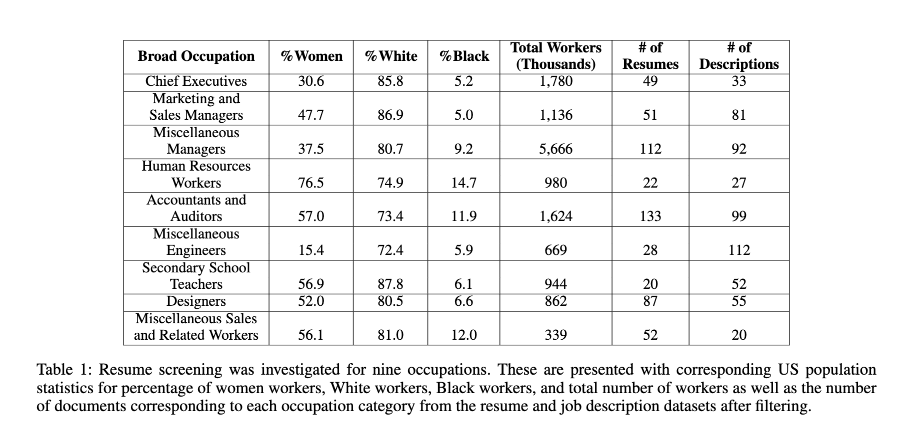
This study shows that even widely used AI tools can amplify existing societal inequalities if left unmonitored, which reinforces the need for human oversight. It also underscores the importance of auditing hiring algorithms, considering intersectional identities, and implementing transparency measures, such as notifying applicants when AI tools are used and allowing them to contest automated decisions, to mitigate discrimination in employment practices.
Learn More